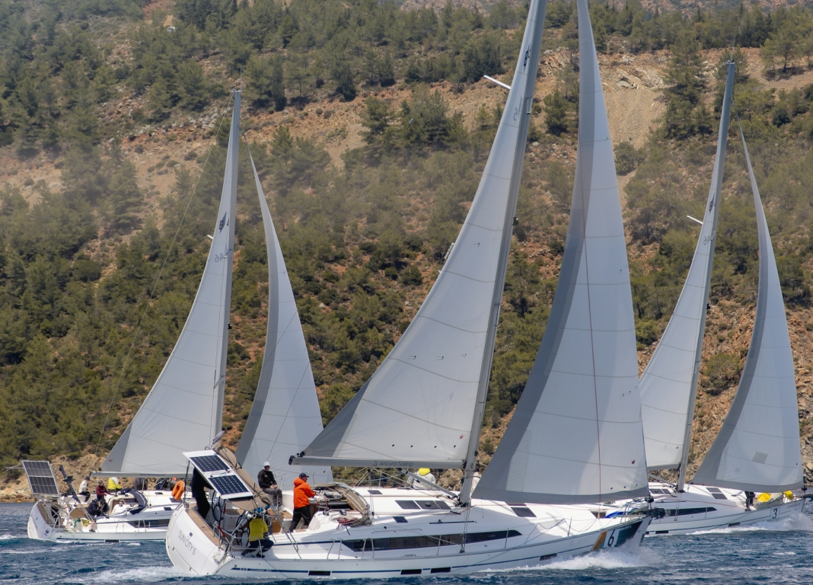

О клубе SAIL ENERGY
Мы — сообщество профессионалов и любителей, объединенных любовью к морю и ветру.
Наш клуб базируется в Санкт-Петербурге, но мы организуем регаты по всему миру: от Турции до Сочи. Мы учим яхтингу с нуля и готовим к участию в международных гонках.

лет на рынке яхтенного образования
подготовленных учеников
Проведенных регат
чемпиона России в составе команды
чемпиона России в составе команды
чемпиона России в составе команды
История клуба началась с более чем 25-летнего пути основателя Егора Игнатенко — мастера спорта, трёхкратного чемпиона России, участника престижных международных серий RC44 и TP52. Сегодня в команде — чемпионы мира и инструкторы высочайшего уровня: Роман Константинов и Евгений Егоров. Мы не просто знаем, как побеждать, — мы передаём это мастерство нашим ученикам.
Обучение и сертификация IYT
Работаем по международным стандартам IYT (International Yacht Training) — это признанная во всём мире система, дающая право арендовать яхту в любой точке планеты. От курса матроса до Yachtmaster Coastal — обучение проходит в формате полного погружения на борту яхты в Турции, с более чем 200 миль реального опыта за 14 дней.
Организация регат и чартер
Мы организуем корпоративные регаты в Санкт-Петербурге, Москве и Сочи, а также за рубежом. Помогаем с поиском и бронированием чартера, проводим флотилии и поддерживаем выпускников на всех этапах.
Участие в спортивных регатах
Мы не просто участвуем в регатах — мы гонимся за результатом.
География наших стартов охватывает Турцию, Россию и страны
ближнего зарубежья. Ключевые победы последних лет: победа в
Marmaris International Race Week (2023), серебро на этапе
Tenzor Elite Cup в Сочи (февраль 2026) с 3 победами в 9
гонках, а также участие в престижных сериях RC44 и TP52.
Каждый год мы выступаем в Open Sailing Week в Турции — это
интенсивный гоночный практикум, где наши спортсмены Егор
Игнатенко и Роман Константинов курируют подготовку экипажа.
В 2026 году мы были в призах на зимнем этапе Tenzor Elite Cup в классе MX700.
Успешно выступали в кубковых регатах на J/70 в Санкт-Петербурге.
Наша гоночная программа охватывает разные классы: J/70, MX700, RS21, Bavaria 46.